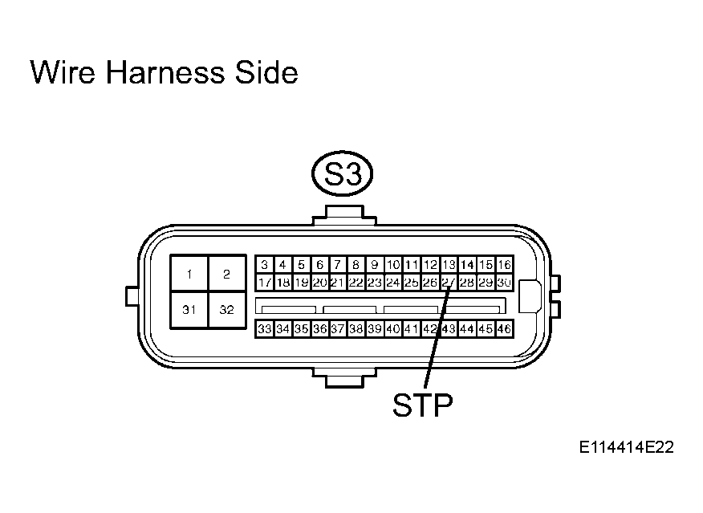
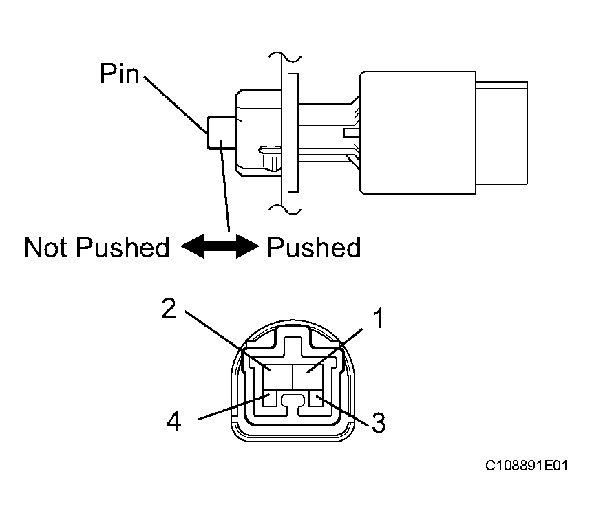
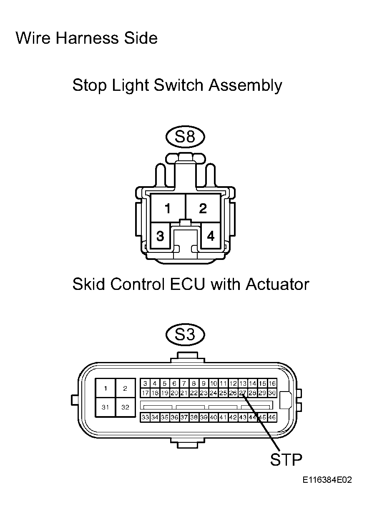

Inspection Procedure
- CHECK STOP LIGHT SWITCH ASSEMBLY
- Check that the stop light illuminates when the brake pedal is depressed, and turns off when the brake pedal is released.
OK
STOP LIGHT CONDITIONCondition Stop Light Condition Brake pedal depressed Illuminates Brake pedal released Turns off
NG: Go to step 4
OK: Go to Next Step
- Check that the stop light illuminates when the brake pedal is depressed, and turns off when the brake pedal is released.
- CHECK WIRE HARNESS (SKID CONTROL ECU - BATTERY)
- Disconnect the S3 ECU connector.
- Measure the voltage of the wire harness side connector.
Standard voltage
TESTER CONNECTION SPECIFIED CONDITIONTester Connection Switch Condition Specified Condition S3-27 (STP) - Body ground Brake pedal depressed 10 to 14 V Brake pedal released Below 1 V
NG: Go to step 5

Courtesy of © TOYOTA, LICENSE AGREEMENT TMS1002OK: Go to Next Step
- CHECK IF DTC OUTPUT RECURS
- Clear the DTCs (see DTC CHECK / CLEAR ).
- Drive the vehicle at approximately 30 km/h (19 mph) or more for 60 seconds or more.
- Check for DTCs (see DTC CHECK / CLEAR
).
Result
RESULT REFERENCEResult Proceed to DTC is output A DTC is not output B HINT:
When replacing the skid control ECU with actuator, perform the zero point calibration (see CALIBRATION ).
B: END
A: REPLACE BRAKE ACTUATOR ASSEMBLY
- INSPECT STOP LIGHT SWITCH ASSEMBLY
- Disconnect the S8 switch connector.
- Measure the resistance of the switch.
Standard resistance
TESTER CONNECTION SPECIFIED CONDITIONTester Connection Switch Condition Specified Condition 1 - 2 Pin not pushed Below 1 Ω Pin pushed 10 kΩ or higher
NG: REPLACE STOP LIGHT SWITCH ASSEMBLY

Courtesy of © TOYOTA, LICENSE AGREEMENT TMS1002OK: Go to Next Step
- CHECK WIRE HARNESS (STOP LIGHT SWITCH - SKID CONTROL ECU AND BATTERY)
- Disconnect the S8 switch connector.
- Disconnect the S3 ECU connector.
- Measure the voltage of the wire harness side connector.
Standard voltage
TESTER CONNECTION SPECIFIED CONDITIONTester Connection Specified Condition S8-2 - Body ground 10 to 14 V - Measure the resistance of the wire harness side connectors.
Standard resistance
TESTER CONNECTION SPECIFIED CONDITIONTester Connection Specified Condition S8-1 - S3-27 (STP) Below 1 Ω
NG: REPAIR OR REPLACE HARNESS AND CONNECTOR

Courtesy of © TOYOTA, LICENSE AGREEMENT TMS1002OK: Go to Next Step
- CHECK IF DTC OUTPUT RECURS
- Clear the DTCs (see DTC CHECK / CLEAR ).
- Drive the vehicle at approximately 30 km/h (19 mph) or more for 60 seconds or more.
- Check for DTCs (see DATA LIST / ACTIVE TEST
).
Result
RESULT REFERENCEResult Proceed to DTC is output A DTC is not output B HINT:
When replacing the skid control ECU with actuator, perform the zero point calibration (see CALIBRATION ).
B: END
A: REPLACE BRAKE ACTUATOR ASSEMBLY